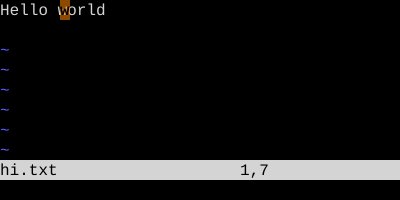
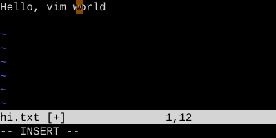
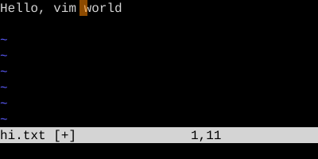

The Modes
A small finite state machine you carry in your head
Normal, Insert, Visual, Replace, Command-line, Operator-pending, Terminal. What each is for and how to move between them.
Vim has seven modes. You will spend essentially all your time in two of them — Normal and Insert. The other five matter for specific jobs. Knowing they exist, and how the transitions work, is more important than memorizing every command in each.
| Mode | Status line | What it's for |
|---|---|---|
| Normal | (empty) | The default. Keys are commands. |
| Insert | -- INSERT -- |
Keys type text. |
| Visual | -- VISUAL -- / -- V-LINE -- / -- V-BLOCK -- |
Select text, then act on it. |
| Replace | -- REPLACE -- |
Overtype existing characters. |
| Command-line | shows typed : / / / ? |
Run an Ex command or search. |
| Operator-pending | (empty, but last key was an operator) | Waiting for a motion or text object. |
| Terminal | -- TERMINAL -- |
An interactive shell inside Vim. |
Getting Out
From any mode except Normal, Esc returns to Normal. From Insert and Visual, Ctrl-[ does the same. Build the Esc reflex: after every thought, escape.
Terminal mode is the exception — Esc is forwarded to the shell. Use Ctrl-\Ctrl-N to escape from a Vim terminal.
Operator-pending: the secret seventh mode
When you press an operator like d, c, y, or >, Vim enters operator-pending mode and waits for a motion or text object. You're in Normal mode no longer — keys do different things in this state. i no longer enters Insert; it begins a text object (inner ...). a no longer appends; it begins around-text-objects. The operator and motion together form a single change, which is what . repeats.
| Key | Note |
|---|---|
| d | |
| i | |
| w |
Why this matters
When something surprises you in Vim — a key doesn't do what you expected — nine times out of ten you misjudged the current mode. "I pressed dd and it just typed two d's" → you were in Insert. "I pressed i and a word disappeared" → you were in operator-pending after d. The fix is always the same: press Esc (sometimes twice) and start over from Normal.
Worked example — Normal -> Insert -> Normal
The mode transition every editing change goes through.

When you open a file, you start in Normal mode. Keystrokes are commands.

i enters Insert at the cursor; subsequent keys produce text. The status line below advertises the mode.

Esc commits the insert and returns to Normal. The whole insertion is one undoable change.
Watch
See also: Modal Editing, The Universal Grammar, The Three Visual Modes, Replace Mode, One-Shot Normal Mode